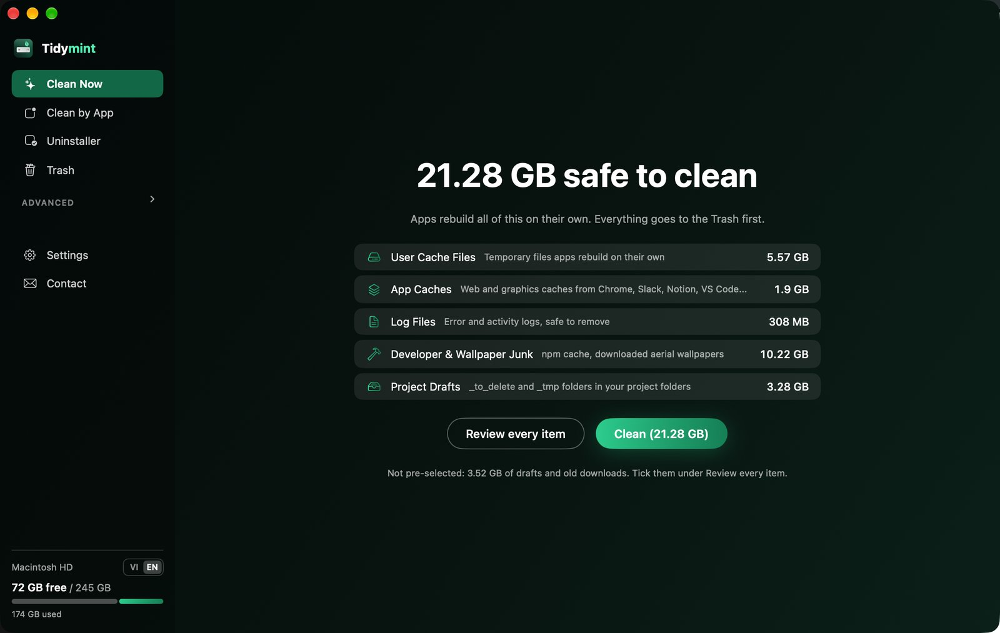
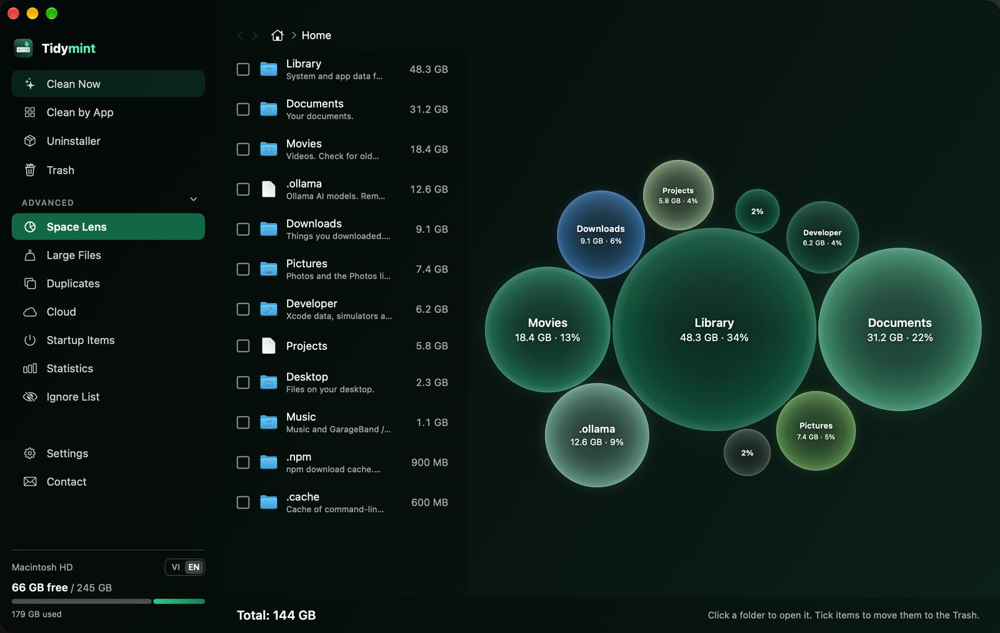
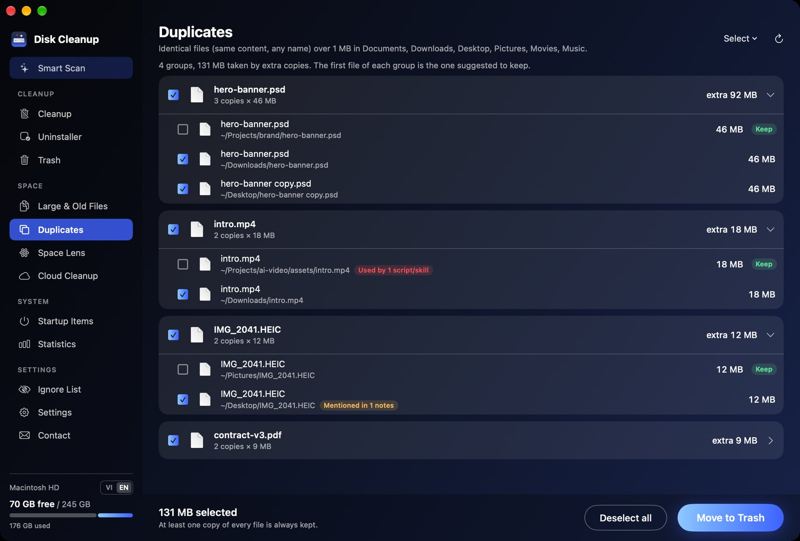
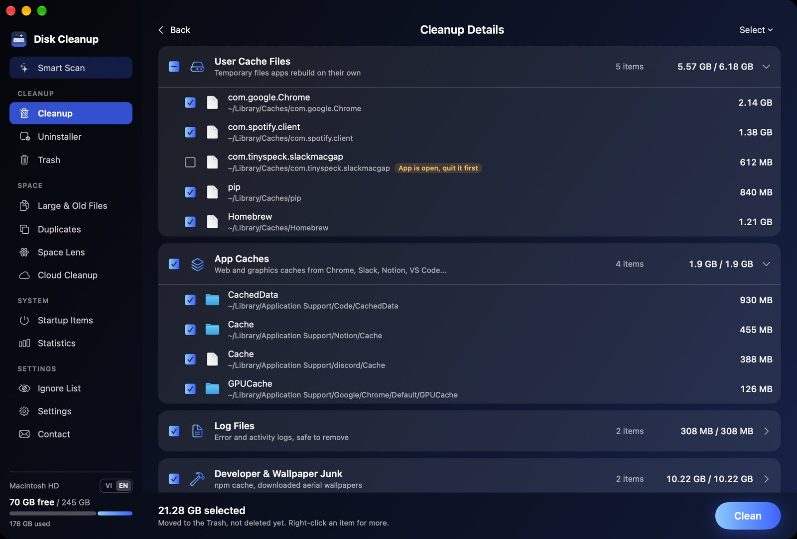

Tidymint là app dọn rác Mac miễn phí, mã nguồn mở, giao diện tiếng Việt. Dọn bộ nhớ đệm và Dữ liệu hệ thống, tìm file trùng, gỡ app sạch sẽ và xem chính xác cái gì đang chiếm ổ.

Trong Cài đặt hệ thống › Cài đặt chung › Dung lượng, macOS gom mọi thứ không xếp được vào mục Dữ liệu hệ thống (System Data). Mục này hay phình lên hàng chục GB và khó xem bằng Finder.
Tidymint chỉ ra thư mục nào đang lớn trên máy bạn, giải thích từng thư mục bằng lời dễ hiểu, và cho bạn chuyển các mục an toàn vào Thùng rác.



Có. App mã nguồn mở theo giấy phép MIT, không tài khoản, không thuê bao, không có bản trả phí.
Tidymint chỉ chuyển vào Thùng rác nên lấy lại được hết. App không bao giờ động tới Ảnh, Mail, mật khẩu, thư mục đám mây hay bộ nhớ đệm hệ thống của Apple, và mục rủi ro không bao giờ chọn sẵn.
Tidymint chưa được Apple công chứng (cần tài khoản nhà phát triển trả phí). Mở một lần qua Cài đặt hệ thống › Quyền riêng tư & Bảo mật › Vẫn mở, đúng như hướng dẫn của Apple. Mã nguồn công khai trên GitHub.
Không. App chạy không cần mạng. Dữ liệu chỉ rời máy khi bạn tự gửi góp ý hoặc đăng ký bản tin.
Tidymint miễn phí, mã nguồn mở, tập trung vào dọn dẹp và dung lượng ổ. App không có quét mã độc hay tinh chỉnh hiệu năng.
macOS 14 trở lên, cả máy chip Apple lẫn máy Intel.
Không. iOS không cho app dọn dữ liệu của app khác, còn Windows hiện chưa có kế hoạch.
Cần macOS 14 trở lên, chạy được cả máy chip Apple và máy Intel.
Các bước mở app chưa công chứng theo hướng dẫn chính thức của Apple: Mở app an toàn trên máy Mac. Mã nguồn công khai trên GitHub.
Mẹo giữ máy gọn và thông báo phiên bản mới, mỗi tháng tối đa một thư.
Nhận thông tin cập nhật mới nhất. Huỷ bất kỳ lúc nào.
Miễn phí, mã nguồn mở, mọi thứ vào Thùng rác trước.
Tải miễn phí →App dọn rác Mac miễn phí, mã nguồn mở. Cung cấp nguyên trạng, không bảo hành.
Website dùng cookie Google Analytics để đếm lượt truy cập. Bản thân app Tidymint không theo dõi gì. Quyền riêng tư